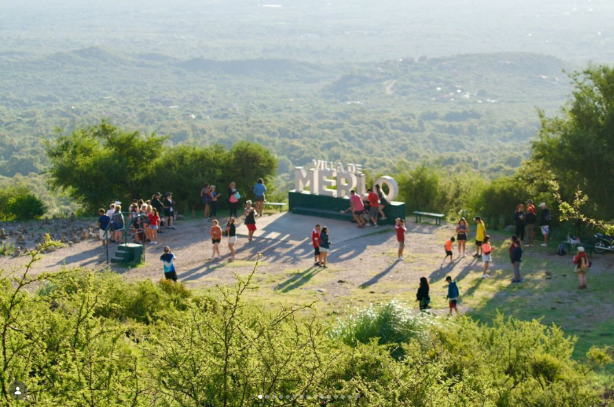

El Corazón del Folklore en San Luis
"Argentina en Merlo" nace con el propósito firme de unir a las academias, ballets y agrupaciones folklóricas de cada rincón de nuestra patria.
Año tras año, la ciudad se transforma en un escenario a cielo abierto. Durante las jornadas del encuentro, cientos de bailarines y músicos comparten peñas, talleres, desfiles e intercambios culturales que enriquecen nuestro acervo tradicional.
No se trata solo de un evento de danza, sino de una experiencia de convivencia, hermandad y puesta en valor de nuestras raíces gauchas y folklóricas.


Villa de Merlo: El Marco Perfecto
Ubicada al pie de las Sierras Comechingones, la Villa de Merlo es mundialmente conocida por su microclima único. Un entorno natural privilegiado que combina aire puro, paisajes imponentes y la tranquilidad ideal para disfrutar en familia.
Aprovechá la estadía del encuentro para recorrer sus arroyos, sus miradores serranos y su variada gastronomía regional.